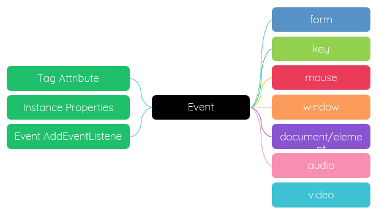

<div onclick="alert('hi,there.')">点击我</div>
<div onclick="fn()">点击我</div>
function fn() {
alert('hi,there.')
}
<div onclick="fn_para({id:1,name:'glpla'})">点击我</div>
function fn_para(p) {
console.log(this);
console.log(p);
}
const el = document.querySelector('div')
el.onclick = function () {
console.log(this);
}
const el = document.querySelector('div')
el.onclick = function (e) {
console.log(e);
console.log(this);
}
el.addEventListener(event-type, event-handle, capture)
el.removeEventListener(event-type, event-handle, capture)
//具名函数
wrap.addEventListener('click', fn)
//匿名函数；无法清除
wrap.addEventListener('click', (e) => {
console.log('wrap', e.target);
})
function fn(e) {
console.log('wrap fn', e.target);
}
//在另外一个元素的点击事件中，移除 wrap 的事件侦听器，只有 fn 可以被移除；另外一个事件继续生效
card.addEventListener('click', (e) => {
console.log('card', e.target);
wrap.removeEventListener('click', fn)
})
function setBg(color) {
console.log('hi');
console.log(ta);
ta.style.background = color;
}
ta.addEventListener('focus', setBg('#f40'));
ta.addEventListener('blur', setBg('#ccc'));
ta.addEventListener('focus', function () {
setBg('#f40')
});
ta.addEventListener('blur', function () {
setBg('#ccc')
});
ta.addEventListener('focus', (e) => {
console.log(e);
setBg('#f40')
});
ta.addEventListener('blur', (e) => {
console.log(e);
setBg('#ccc')
});